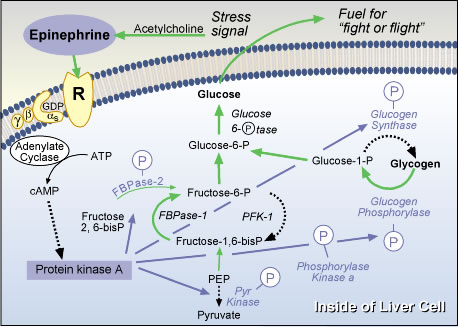

|
Question 6: Epinephrine Action to Mobilize GlycogenTutorial to help answer the question. To which receptor does epinephrine bind in order to stimulate phosphorylation of glycogen synthase, glycogen phosphorylase, PFK-2/FBPase-2 bifunctional enzyme, and pyruvate kinase?
TutorialWe are dealing here with the major action of epinephrine to mobilize glycogen from liver (shown), and also muscle (which lacks PFK-2 and glucose-6-phosphatase). The context is acute stress, so the liver's role is to release fuel into the blood, while muscle would then use the fuel, from either the liver or from its own glycogen stores, for the "fight or flight response".The coordinate regulation of glucose metabolism is via phosphorylation, the opposite of insulin's action via dephosphorylation. As you will recall, the Gs/cAMP/protein kinase A pathway is involved in many important phosphorylation events, including the ones here. Recall also that epinephrine, unlike the peptide hormone glucagon,is a catecholamine and thus must bind to an adrenergic receptor. Which adrenergic receptor subtype(s) act via Gs? Primary Action of Epinephrine in a Liver Cell  Problem 6 | Answer | Problem
7 The University of Arizona March 16, 2001 Revised: August, 2004 Contact the Development Team http://biology.arizona.edu |